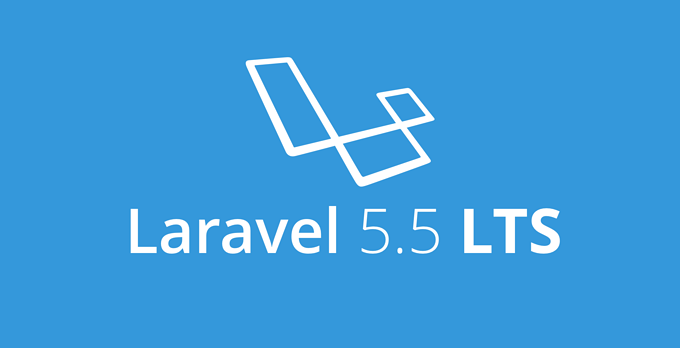

Laravel 5.6 是继 5.5 之后 Laravel 官方发布的最新版本。此版本包含众多新特性，接下来我们说一说几个重要的特性。如需查看完成的发布日志，请点击这里。
Laravel 5.5 将是下一个 LTS 版本，预计 7/8 月份发布
作者: ·2017年02月20日

Laravel 的上一个 LTS（长期支持）版本是 Laravel 5.1，发布于 2015 年 6 月，按照对 LTS 版本的约定，两年的 bug 修复支持到今年中旬就结束了，所以今年中旬必然要出一个 LTS 后继版本，就是 Laravel 5.5。

Laravel 之父：让 Laravel、Symfony、 Zend 来一场公平的性能测试
作者: ·2017年01月12日
网上充斥着各式各样的 PHP 框架性能对比的文章。然而，他们总是把“苹果”和“橘子”做对比（看上去有点儿像，都是圆的，但其实不是一码事）。这次，我将着重对 Laravel、Symfony 和 Zend 这三个框架做性能对比，并且还要说明为什么这三个框架总是被错误的进行比较。
Laravel 5.3 正式发布
作者: ·2016年08月23日

Laravel 项目组自豪地宣布 Laravel 5.3 正式发布了 ！5.3 版本中的新增特性主要集中在提升开发速度，通过增强常见任务的开箱即用功能提升开发效率。
Laracon 开发者大会快报：听 Taylor Otwell 讲解 Laravel 5.3 的新特性
作者: ·2016年07月28日

今天， Taylor Otwell 在 Laracon US 开发者大会上就 Laravel 5.3 的新特性作了长时间的演讲，演讲内容主要概括为四个方面：Laravel Scout、Laravel Passport、Laravel Mailable 和 Laravel Notifications。